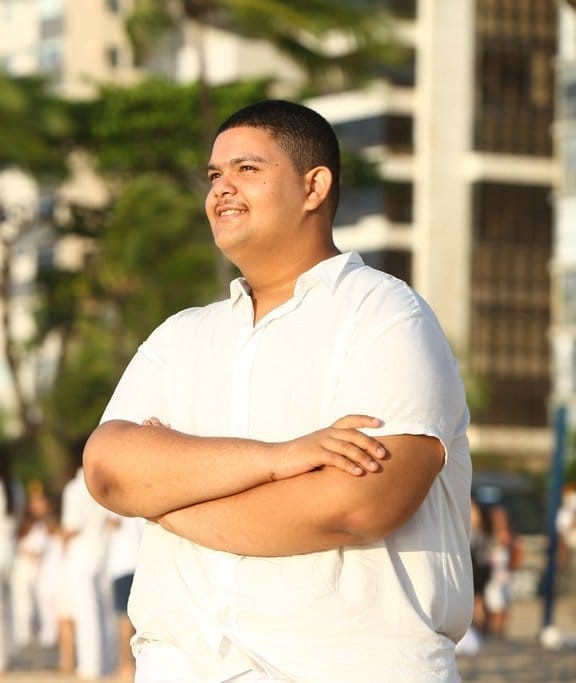
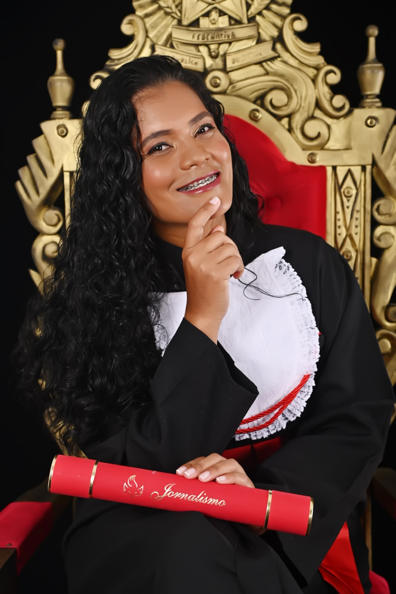

Entrevistas
Realizamos duas entrevistas com Rodrigo Pedro e
Elaine Oliveira para saber suas percepções e experiências com a
Educação. Foram feitas as seguintes perguntas:
- Qual seu nome, idade e sua formação?
- Fale um pouco sobre você e sua relação com a educação?
-
Baseado em suas experiências, o que é educação e quais os
pressupostos que o regem?
-
Baseado em suas vivências, a educação tem a capacidade de mudar
vidas? Ela mudou a sua? De que forma ela mudou?
- Para você quem aprende e quem ensina?

"Olá, tudo bem? Meu nome é Rodrigo Pedro, tenho 19 anos e atualmente
estou cursando Técnico em Administração na ETEPAC e Licenciatura em
Ciências Biológicas na UFRPE (com início previsto para 2024.2). Minha
trajetória com a educação tem sido marcada por desafios e transformações
profundas. Durante grande parte da minha vida acadêmica, na educação
básica, enfrentei um modelo de ensino desatualizado e pouco estimulante.
Muitos professores se limitavam a passar tarefas de livros,
contabilizando-as como aulas, o que resultou em um aprendizado
superficial e dificultou meu desenvolvimento como um cidadão crítico. O
método tradicional de "copiar do livro e colar no caderno" e a
expectativa de que os alunos se virassem sozinhos para aprender não
ajudaram a cultivar habilidades analíticas e reflexivas. Como Paulo
Freire, o renomado educador, dizia: “ensinar não é transferir
conhecimento, mas criar as possibilidades para sua própria construção.”
Infelizmente, o sistema educacional que vivenciei não seguiu essa
abordagem, e eu senti que não estava sendo preparado para pensar
criticamente, mas sim para aceitar passivamente o que me era imposto. No
entanto, acredito que a educação tem um potencial transformador imenso
quando permite ao aluno questionar, dialogar e relacionar os conteúdos
acadêmicos com suas próprias experiências de vida. Um ambiente onde me
sinto seguro para tirar dúvidas e expressar minhas ideias vai muito além
das provas; é uma oportunidade de crescer por meio de vivências reais.
Sinto uma enorme gratidão por ter encontrado metodologias de ensino
eficazes que me ajudaram a me tornar um jovem crítico e reflexivo sobre
a realidade do nosso país. O governo pode não temer o pobre que passa
fome, mas teme a juventude que pensa e questiona. Acredito que a
educação só pode ser verdadeiramente transformadora quando é
democratizada e oferece igualdade de condições para todos,
independentemente da região ou do grupo social. Minha experiência mais
positiva com a educação pública começou quando entrei na EREM Ginásio
Pernambucano Aurora. Lá, encontrei uma equipe comprometida com a
transformação de vidas através da educação. Foi essa experiência que me
mostrou que a educação é, de fato, uma via de mão dupla. Aprendo muito
mais quando também tenho a oportunidade de ensinar e compartilhar
conhecimentos. Para mim, a educação é um ato de amor e uma ferramenta
poderosa para a mudança. É por isso que continuo acreditando no seu
potencial de transformar vidas e construir um futuro melhor para todos."
- Rodrigo Pedro

"Olá, sou Elaine Oliveira, tenho 35 anos e sou Jornalista, formada no
curso técnico em rádio e televisão, pela faculdade Maurício de Nassau,
cursando atualmente o segundo módulo do curso técnico em publicidade e
propaganda. Sempre estudei em escola pública e confesso que mesmo com
todos os problemas eu percebia que os professores tinham uma vontade
imensa de ensinar e de contribuir para a formação dos alunos. Na quarta
série do ensino fundamental lembro que a professora fez um bloco de
carnaval e pediu que desenhássemos um porta-estandarte, e muitos não
tinham conhecimento, mas na casa de minha tia tinha um porta-estandarte,
pois ela fazia parte da sede “abanadores” do Arruda e era responsável
pela confecção do porta-estandarte, a partir disto fiz um com papelão e
foi muito divertido. Já em meu ensino médio a dificuldade foi maior,
devido à quantidade de matérias e as necessidades em casa. Porém, tive
uma professora que sempre me acolhia e percebia que estava passando por
problemas e ali eu não via apenas uma professora, mas uma conselheira,
uma psicóloga, uma mãe, então para mim a escola foi uma extensão de
minha casa, o lugar onde me sentia bem, apesar das dificuldades. Baseado
em minhas experiências a educação para mim é uma citação de Paulo freire
que diz“ a educação não muda o mundo a educação muda as pessoas”, e a
educação mudou eu Elaine, e me fez entender que é através do convívio
com outras pessoas, do conhecimento e das matérias que me foram passadas
no decorrer de minha trajetória, que me deram bagagem para eu alcançar
minhas realizações pessoais e profissionais. A educação é como uma
bússola que me orienta e me faz refletir sobre diversas áreas de minha
vida. E, por fim, não poderia finalizar sem falar de minha avó, uma
mulher negra, de pouco conhecimento, que estudou até a quarta série do
ensino fundamental e que não frequentou nenhuma faculdade, mas que
costumo dizer que ela teve formação na universidade da vida, a mulher
mais forte que me ensinou a ler e a escrever. Eu não nasci aqui, sou
natural de São Paulo, mas por meio dela eu aprendi a história de Recife,
do meu país Pernambuco, e se hoje eu sei andar sozinha nos lugares foi
porque a minha avó ali andando de ônibus começou a me contar as
histórias dos lugares, e por isso senti vontade de fazer história, mas
depois eu me apaixonei pela área de comunicação. Então, sintetizo
falando que a educação mudou minha vida, meu olhar em relação aos
sonhos, me ensinou que através da humildade e da vontade de somar na
vida de outras pessoas eu posso alcançar outros voos e incentivar outros
a estudarem e alcançarem seus objetivos. Portanto, em minha visão
ensinar e aprender é uma troca mútua, o professor está ali para passar
as suas vivência e o aluno está ali se permitindo ouvir o que seu
docente tem a ensinar, e quando isto ocorre cada uma das partes
envolvidas deixam de lado um pouco de si e os dois terminam ganhando."
- Elaine Oliveira
Tríade
Eu quis levar o meu sentido
Eu quis passar o aprendido
Eu desejei ser compreendido
Levar, passar, desejar... Amar.
A liberdade, foi respeitada
A cada dia; foi exaltada
Me questionei, pelo que zelava
"Como posso?" Me perguntava
"Humanizar", por cada etapa
Me alegrei, foi realizada
É o que desejo, como formador
A base disso: Amar.
Minha liberdade, foi respeitada
Necessidades, consideradas
Em cada ciclo, eu aprendi
E o formador, compreendi
Senti, quis... Consegui!
Como um sistema
A ser programado
Como um poema
Sendo incorporado
Assim sou eu, sendo educado
A cada fase; humanizado
Sou ferramenta do formador
E com zelo, ele cuidou
A formação, interior
O educando, auxiliou
Formar, zelar, cuidar... Humanizar!
Posso dizer, com propriedade
O Educar, não é novidade
Educar, é um dever
Educar, é também aprender
E efetuar, o aprender
E assim fazer, o humanizar.
- Luna
CAÇA PALAVRAS